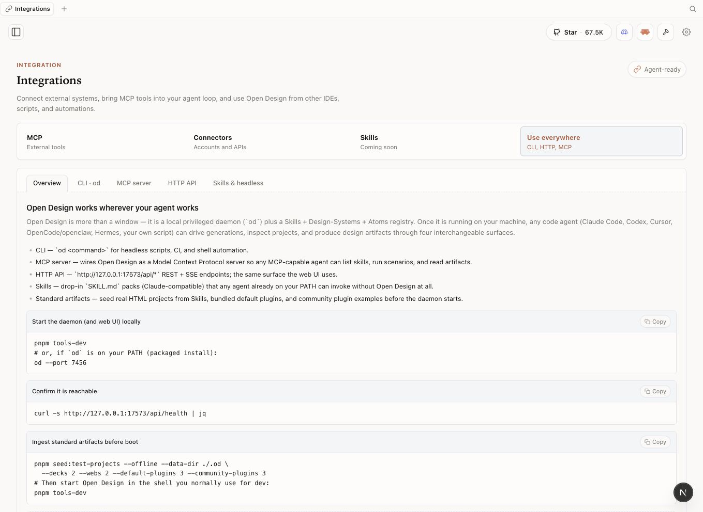
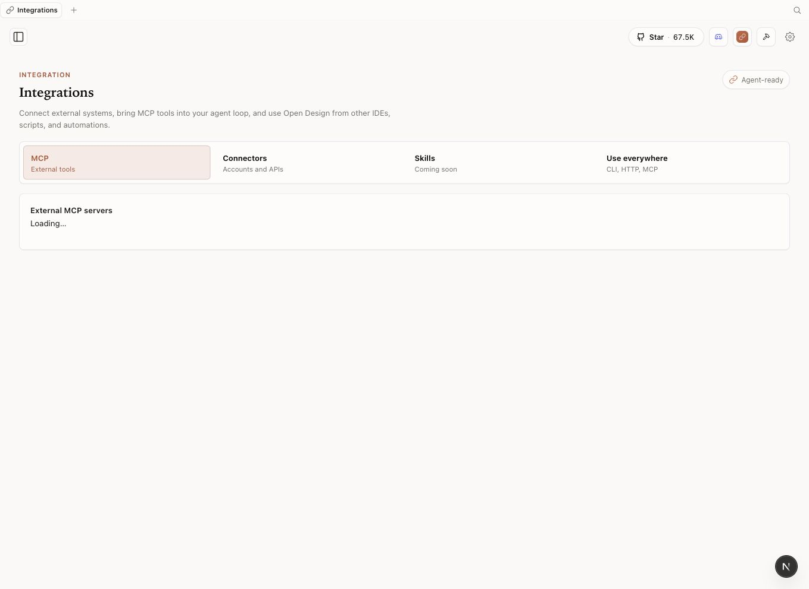
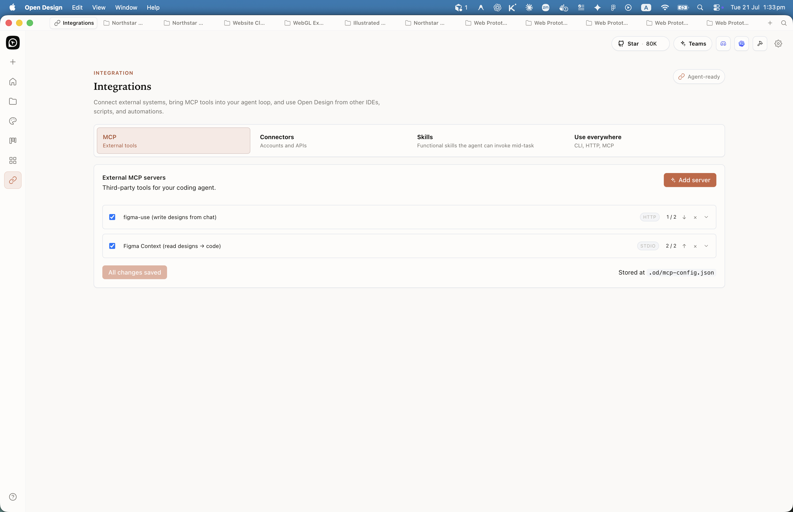
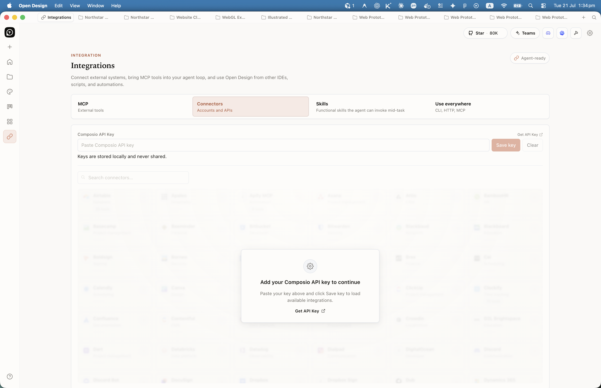
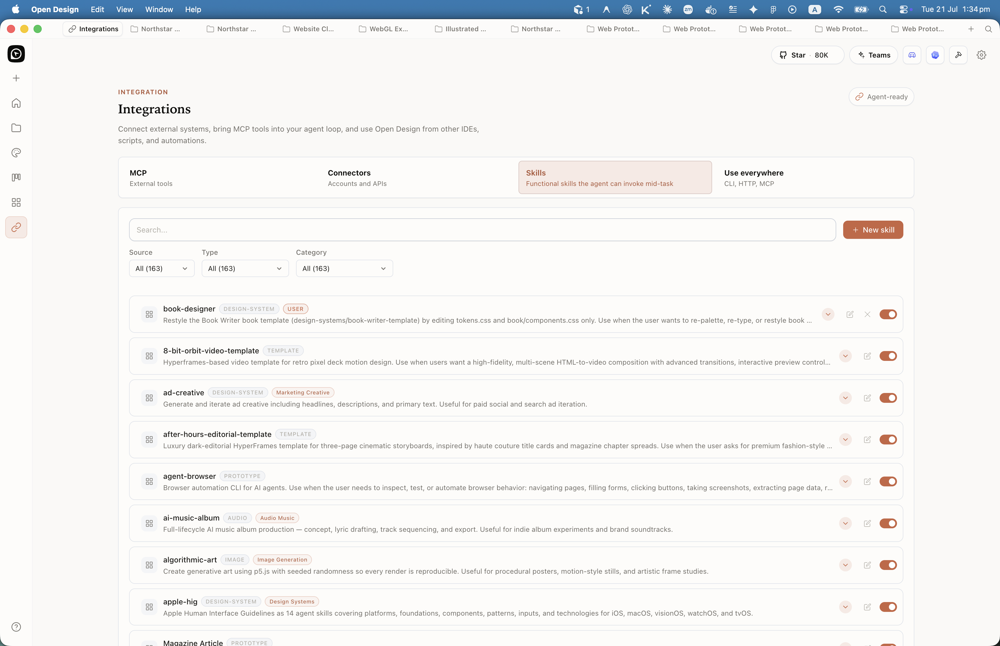

Chapter
10
The MCP Server
How Open Design connects to coding-agent CLIs via the Model Context Protocol
Open Design speaks MCP, so any of the supported coding-agent CLIs can drive it — which is exactly why it is not locked to one vendor's agent. This chapter explains what MCP is, how Open Design exposes its server, how to connect any supported CLI with a single command, what the server exposes to those agents, and how the BYOK proxy routes inference without leaking your keys or your network. CLI counts, adapter priorities, and vendor details in this chapter reflect Open Design v0.9.0 (released June 2, 2026) and the agent-CLI ecosystem as of June 2026; this market changes monthly — verify current state at the primary sources before committing a team to any agent.
10.1 What MCP Is
MCP (Model Context Protocol) is an open standard that lets an AI agent connect to external tools and data sources. Think of it as a USB-C spec for AI: the same socket, regardless of which device you plug in. Open Design is the device; your coding-agent CLI is the charger.
The protocol uses JSON-RPC 2.0 for message transport. A host (the application, Open Design in this case) runs a server; a client (the agent CLI) connects and issues requests; the server responds with structured data. The three layers are fixed by the spec:
Sends requests, receives resources, tools, and prompts
Exposes resources, tools, prompts over JSON-RPC 2.0
Routes inference to anthropic / openai / azure / google / ollama / senseaudio
MCP was created by Anthropic and, per the governance announcement in December 2025, donated to the Agentic AI Foundation (under the Linux Foundation). The spec is published at modelcontextprotocol.io under open governance; the governance announcement describes the intent that any vendor may implement it. (This book describes that governance structure as documented — it is not legal advice on IP ownership or licensing freedom; consult qualified counsel for those determinations.) As of June 2026, the stable spec version is 2025-11-25; a 2026-07-28 revision is in release candidate.
The MCP spec version in this chapter (2025-11-25) is stable as of June 2026. A 2026-07-28 revision is in release candidate. Check modelcontextprotocol.io before relying on any version-specific behavior.
The standard defines three primitives that any MCP server can expose to connected clients. Open Design implements all three. Here is what they mean in context:
| Primitive | What it exposes | Example in Open Design |
|---|---|---|
| Resources | Structured data the agent can read (files, database records, context) | Active project contents, artifact history, brand-system DESIGN.md files |
| Tools | Functions the agent can call (side-effecting actions) | write_file, delete_file, delete_project, generation loop trigger |
| Prompts | Reusable prompt templates the agent can invoke by name | Skill-defined prompt templates for artifact types (web prototype, deck, motion) |
The governance story matters to designers as much as it matters to engineers. MCP is a standard, not a product. When you connect Open Design via MCP, you are not depending on a proprietary plug-in that any one vendor can revoke. One server, many brains — and that relationship is defined by an open spec, not a proprietary API key.
10.2 Open Design's MCP Server
Open Design's daemon runs an MCP server alongside its Express HTTP layer. The MCP server listens for agent connections, authenticates them, and routes their requests to the daemon's generation, file, and project subsystems. You do not start it separately; it starts with the daemon.
As of v0.9.0 (released June 2, 2026), the MCP server gained three new tools: write_file, delete_file, and delete_project, and resolved a long-standing limitation around project directory exposure. The release notes call this "MCP clients can now do real workspace work" — enabling agents to edit and manage files programmatically alongside reading.
Skill injection via MCP: When an agent connects, Open Design injects the active skill into the agent's context using one of three strategies: native skill loading (preferred, for Claude Code and OpenCode which scan a skills directory), prompt injection (universal fallback that concatenates SKILL.md and references into the system prompt), or file-placed workflow (for Cursor and similar agents that read instruction files from the working directory). The agent receives the skill context before it generates anything.
One server, many brains: a single daemon instance runs the MCP server; each connected agent is a separate client session against the same server. You can have Claude Code, Cursor, and OpenCode all connected simultaneously, each working on a different project or variation in the same Open Design instance.
10.3 Connecting an Agent
The od mcp install <agent> command writes the MCP configuration to the CLI's expected config directory, registers the Open Design daemon as a connected server, and optionally injects the active skill context. As of June 2026, every supported agent has its own adapter with its own config format — the install command abstracts that difference.

Confirm the Open Design daemon is running. The install command will fail silently if it cannot reach the daemon socket.
$ od status
daemon: running (v0.9.0)
mcp-server: listening
projects: 3Install the MCP connection for your chosen agent. Substitute the agent ID from the supported CLIs table in section 10.6.
$ od mcp install claude-codeThe command writes to the Claude Code config directory, registers the daemon as an MCP server, and confirms the connection.
Use --print to preview the config without writing it. Useful when you want to verify the configuration before applying it, or when connecting to a remote daemon.
$ od mcp install claude-code --printInstall for multiple agents if you are exercising the agent-agnosticism. Each agent gets its own adapter configuration.
$ od mcp install cursor
$ od mcp install opencode
$ od mcp install codexTo remove a connection, use --uninstall.
$ od mcp install cursor --uninstall
Per-CLI config formats differ. Claude Code uses its native .claude/ config directory with a first-class MCP section. Cursor Agent writes to .cursorrules. Codex uses its own config directory and has known version-specific variance. The od mcp install command handles all of these; you do not need to know which format each agent expects.

10.4 Resources, Tools, and Prompts
Once connected, the agent can see everything the MCP server exposes. This is the full surface area of Open Design as seen by a connected agent — not a UI, but a structured protocol surface the agent can query and call.
| Category | Name | What it does | Added |
|---|---|---|---|
| Tool | write_file |
Write a file to the active project workspace | v0.9.0 |
| Tool | delete_file |
Delete a file from the active project workspace | v0.9.0 |
| Tool | delete_project |
Delete a project and its associated workspace | v0.9.0 |
| Tool | Generation loop trigger | Start an artifact generation run with a skill, brand, and prompt | Pre-v0.9.0 |
| Resource | Active project contents | Structured read access to the current project's files and metadata | Pre-v0.9.0 |
| Resource | Brand system DESIGN.md | Read access to the selected brand contract for context injection | Pre-v0.9.0 |
| Prompt | Skill-defined templates | Named prompt templates per skill (web prototype, deck, motion, dashboard) | Pre-v0.9.0 |
The v0.9.0 addition of write_file and delete_file is more significant than it sounds. Before that release, MCP clients could drive generation but could not do independent file work inside the project workspace. Now a connected agent can fetch an artifact, rewrite a specific file within it, and clean up intermediate files — all without leaving the agent session or switching to the Open Design UI.
10.5 The BYOK Proxy
Open Design does not bundle an inference provider. You bring your own key (BYOK), configure a provider, and the daemon proxy routes calls to the model on your behalf. The proxy endpoint pattern is:
POST /api/proxy/{provider}/stream
# Where {provider} is one of:
# anthropic | openai | azure | google | ollama | senseaudio
Each route accepts a baseUrl, apiKey, and model in the request body. The proxy supports Anthropic, OpenAI, Azure OpenAI, Google Gemini, Ollama, LM Studio, vLLM, and any OpenAI-compatible endpoint. Per the Open Design v0.9.0 security documentation, your key is stored in config.toml with mode 0600, designed to be accessible only by the daemon process owner.
| Provider route | Inference location | Key storage | Notes |
|---|---|---|---|
anthropic |
Anthropic cloud | config.toml (0600) |
Supports all Claude models; recommended for Claude Code pairing |
openai |
OpenAI cloud | config.toml (0600) |
Also accepts any OpenAI-compatible endpoint via baseUrl |
azure |
Azure OpenAI cloud | config.toml (0600) |
Useful for enterprise tenants with Azure OpenAI deployments |
google |
Google cloud | config.toml (0600) |
Gemini models; note the Gemini CLI agent adapter is P2 (see §10.6) — this Google provider route is unaffected regardless of the CLI's status |
ollama |
Your machine | No key needed | The only provider where inference is fully local; required for full local-first privacy |
senseaudio |
SenseAudio cloud | config.toml (0600) |
Audio-specific inference; used for TTS and audio generation artifacts |
SSRF and key exposure risk: Per the Open Design v0.9.0 README and architecture documentation, the BYOK proxy is designed to include per-target SSRF protection, configured to block requests to internal IPs, link-local addresses, and CGNAT ranges at the daemon edge. This is a documented design intent, not a security guarantee; review the source and your deployment configuration before relying on this protection. The underlying risk is real: an attacker who can send requests to the proxy could attempt to make the daemon call internal network services or exfiltrate your API keys. Keep the daemon bound to localhost. Do not expose the proxy on a public or LAN interface without additional authentication. Your baseUrl values are validated against these blocks at request time per the documented behavior.
The local-first vs local-inference distinction reappears here. Open Design is local-first: your files, your project workspace, and the daemon orchestration all run on your machine. But inference is local only when you choose the ollama provider. Every other provider sends the generation request to a cloud model. If inference privacy is your goal, configure Ollama and a local model before connecting an agent.
10.6 Supported CLIs
As of Open Design v0.9.0 (released June 2, 2026), the daemon ships adapters for a growing list of coding-agent CLIs. The v0.9.0 release added Aider, Trae CLI, and DeepSeek Reasonix — three new agents that reflect how fast this market is expanding. New entries appear in each minor release; this table reflects the snapshot at publication.
| CLI | Vendor | License / type | Priority | od mcp install ID |
|---|---|---|---|---|
| Claude Code | Anthropic | Proprietary | P0 | claude-code |
| Cursor | Anysphere | Proprietary | P0 | cursor |
| GitHub Copilot CLI | GitHub / Microsoft | Proprietary | P1 | copilot |
| OpenCode | anomalyco | MIT | P0 | opencode |
| OpenAI Codex CLI | OpenAI | Apache-2.0 | P1 | codex |
| Gemini CLI | Apache-2.0 | P2 (sunset — see note below) | gemini |
|
| Google Antigravity | Proprietary | P1 | antigravity |
|
| Cline | Cline | Apache-2.0 | P1 | cline |
| Trae CLI | ByteDance | Proprietary | P1 | trae |
| Kimi CLI | Moonshot AI | Proprietary | P2 | kimi |
| Aider | Paul Gauthier | Apache-2.0 | P1 | aider |
| DeepSeek Reasonix | DeepSeek | Proprietary | P2 | deepseek |
The remaining adapters (Pi Agent, Mistral Vibe CLI, Hermes, Qwen, Qoder, Kiro, Kilo, OpenClaw, VS Code + Copilot, and others added in subsequent releases) follow the same install pattern with their respective IDs. All listed adapters support MCP; what differs is the config format each CLI expects and how Open Design's adapter bridges the gap.
A note on Gemini CLI: as of June 2026, per Open Design's adapter documentation, the Gemini CLI adapter is classified P2 and treated as sunset in Open Design's priority scheme. The gemini adapter remains in the codebase for users on older configurations, but do not start a new project with it. Verify the current sunset status and timeline directly with Google before publication. The Google Antigravity adapter is the current Google-family successor in Open Design's adapter list.
CLI market churn: The agent-CLI market changes monthly. As of June 2026 per Open Design's adapter documentation, the Gemini CLI adapter is P2 and described as sunset; verify the current status directly with Google before relying on it. OpenCode (anomalyco) is MIT-licensed and open source; for details on its history and current feature set, see the project repository at github.com/anomalyco/opencode. Google Antigravity was in active development as of June 2026; check its current roadmap and pricing directly with Google. Adapter priority levels (P0/P1/P2) may shift between releases. Re-verify any CLI's version, pricing, and MCP support status against its primary source before committing a team to it.
Chapter 11 compares the headline agents in depth — use the comparison there to choose which CLIs to actually invest in. This chapter's job is to confirm that the connection is the same for all of them and that swapping agents is a one-command operation.
Agent-agnosticism via MCP is Open Design's strongest strategic feature, and most teams adopt it without actually using it. I run two agents against the same Open Design instance: one proprietary for the work that demands capability, one open-source (OpenCode, MIT) as a vendor-independence hedge. The only way to know that the escape hatch works is to use it occasionally. If you have only ever connected Claude Code and a vendor sunsets, changes pricing, or revokes a capability, you will spend a difficult afternoon re-establishing a workflow that a second od mcp install opencode would have prevented. The caution: MCP support is broad but per-CLI config formats still differ; expect some setup friction per agent, and test the connection on a throwaway project before relying on it in production work.
The v0.9.0 addition of write_file and delete_file to the MCP tool surface is the most underreported capability in this release. Before it, MCP was read-and-generate: the agent could read context and trigger generation, but file management stayed in the UI. Now a connected agent can manage workspace files programmatically. The practical payoff is in multi-step workflows where an agent needs to assemble, iterate, and clean up files as part of a longer generation loop — without the human touching the UI between steps. I'd call this the foundation of genuinely autonomous design workflows. The caution: file deletion via an agent is permanent; the same discipline you apply to any agentic file-write applies here. Review what the agent is doing before you trust it to manage workspace state.
10.7 Integrations beyond MCP: Connectors and Skills
MCP connects agents to Open Design. Connectors connect Open Design to external data. The Integrations surface --- reachable from the sidebar and the home header's Use everywhere link --- documents CLI, MCP, HTTP, and headless paths alongside connector and skill management. As of v0.15.1 the sidebar groups these as Connectors (external services) and the in-page tabs expose Composio-backed connector setup plus a Skills manager for installed recipes.

The Connectors tab is backed by Composio --- a connector runtime that abstracts OAuth and API-key management for hundreds of external services. Paste a Composio API key at the top of the tab; the key is stored locally and never transmitted to Open Design's servers. Once configured, a searchable grid of service tiles appears. Activating a connector makes its data surface available to any Live artifact you generate: a dashboard wired to Notion, Airtable, or Slack reads live data instead of placeholders. That is what separates a live artifact from a prototype.

The Skills manager on the same Integrations surface lists installed recipes, discovery paths, and headless invocation entry points. It complements the skill-authoring model in Chapter 04: skills define generation structure; the manager shows which recipes are active in your environment and how to invoke them outside the Electron window.

Next: Chapter 11 compares the seven headline agent CLIs — Claude Code, Cursor, GitHub Copilot, OpenCode, OpenAI Codex CLI, Gemini CLI, and Google Antigravity — against a consistent set of criteria: type, MCP support, pricing and license, model access, and best-fit design use case. The routing table there routes by constraint, not by ranking. That is where you choose your brain; this chapter is where you connect it.